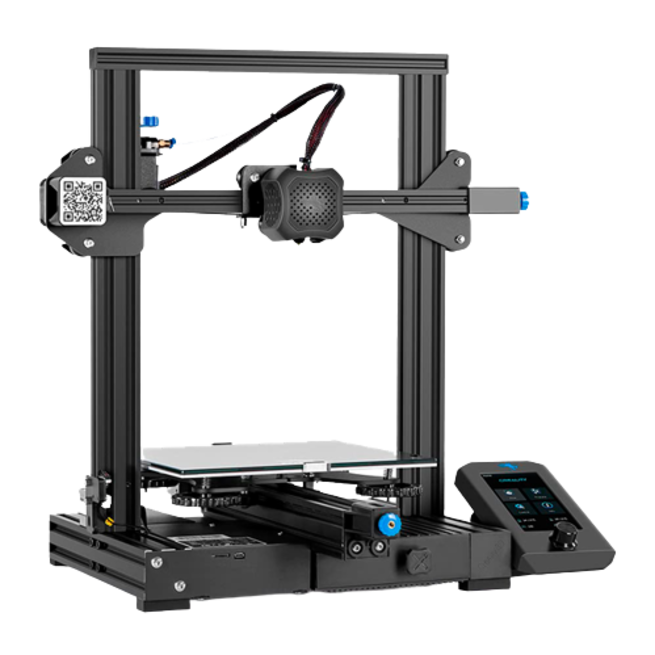
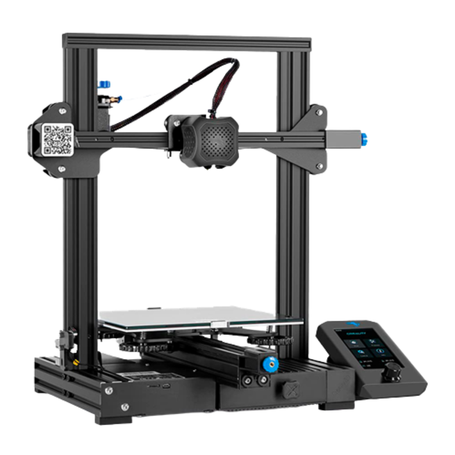

Diferencia entre "Resina" y "Filamento"
 

1Resina
Proporciona una resolución mayor que otras impresoras,
es ideal para piezas más pequeñas con detalles y
también es muy buena para objetos sólidos y rellenos, de carácter macizo.

2Filamento
Las impresoras 3D de filamento trabajan dividiendo los objetos en capas que después son apiladas una encima de otra hasta reconstruir el modelo digital.
Esto lleva a que las impresionen pierdan calidad.
Se recomiendan para impreciones de un tamaño mayor.